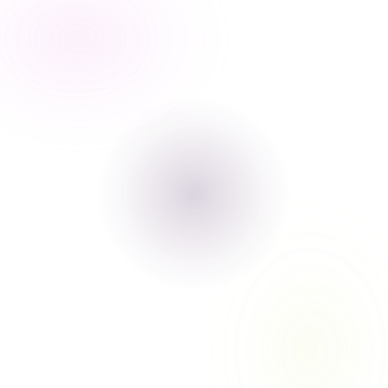

Plongez dans les mysteres de l'alchimie amoureuse. Notre analyse revele l'harmonie profonde entre deux ames.
Notre algorithme analyse les prenoms et dates de naissance de deux personnes pour calculer un score de compatibilite amoureuse. Le resultat comprend un resume personnalise, les points forts du couple et des conseils adaptes.
Notre algorithme croise plusieurs criteres pour evaluer l'affinite amoureuse entre deux personnes. Chaque analyse est unique et generee sur mesure a partir des informations fournies.
Il suffit d'entrer les prenoms des deux personnes. Les dates de naissance sont optionnelles mais permettent d'affiner le score d'alchimie amoureuse et d'obtenir une analyse de couple plus detaillee.
Oui, notre test d'affinite amoureuse est entierement gratuit. Vous pouvez tester autant de combinaisons de prenoms que vous le souhaitez et partager chaque resultat sur Facebook, WhatsApp, Instagram, TikTok et Snapchat.
Les informations fournies servent uniquement a calculer votre compatibilite de couple. Elles ne sont jamais stockees ni transmises a des tiers. Aucune donnee personnelle n'est conservee apres le test d'amour.
Deux prenoms, un desti
Les astres convergent...
de compatibilite amoureuse
Recevez votre bon de reduction exclusif par email et parlez de votre couple avec un expert.
Merci ! Votre bon de -30% a ete envoye.
Votre couple vous interroge ? Parlez a un expert
Consulter un voyant specialiste en relations amoureuses